Almost every Active Directory attack path starts from a working domain, so being comfortable building one is worthwhile — both to understand how the pieces fit together and to stand up a lab for practising the techniques covered elsewhere on this site. This writeup walks through a complete AD DS build: installing the role, promoting the first domain controller for a brand-new forest, creating a user, joining a client, verifying the domain is healthy, and finally importing and linking Microsoft's Windows 11 security-baseline Group Policy.
Environment
Domain controller: WIN-PVE0V3E6E2T (Windows Server)
Forest / domain: schome.local
Client: HP-Envy (Windows 11)
DC IP: 192.168.29.39
Installing the AD DS Role
With a fresh Windows Server installed, open Server Manager and choose Manage → Add Roles and Features. Step through the wizard to the Server Roles page and select Active Directory Domain Services, then let the role (and its required features) install.
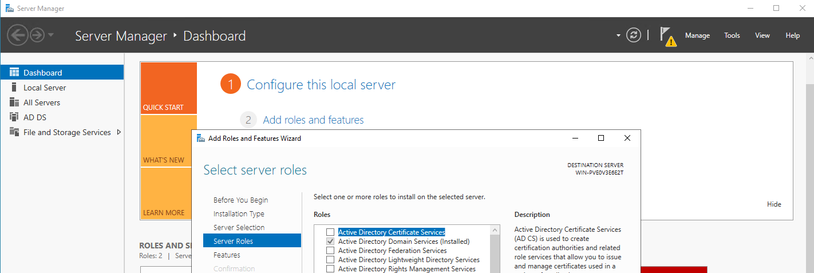
Promoting the Server to a Domain Controller
Installing the role does not create a domain on its own. Once it finishes, Server Manager shows a post-deployment notification. Click the flag icon and select Promote this server to a domain controller to launch the configuration wizard.
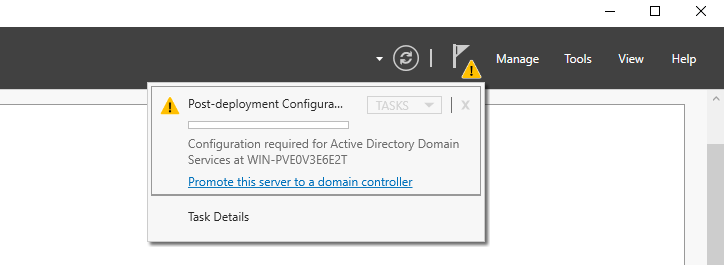
Because this is the first domain controller, choose
Add a new forest and set the root domain name. Here the
forest and domain are schome.local. Continue through the
wizard — set a Directory Services Restore Mode (DSRM) password on the
Domain Controller Options page, accept the DNS and default path options,
let the prerequisites check pass, and install. The server reboots when the
promotion completes.
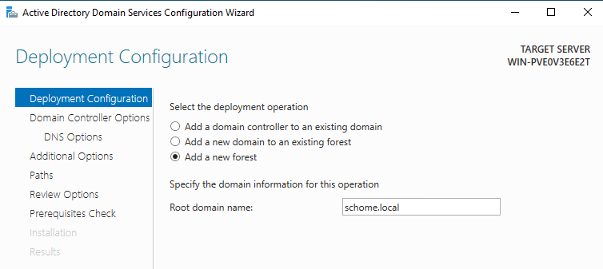
schome.local.Creating a User in Active Directory
After the reboot the server is a domain controller. Open Active Directory Users and Computers (ADUC) from the Tools menu in Server Manager.
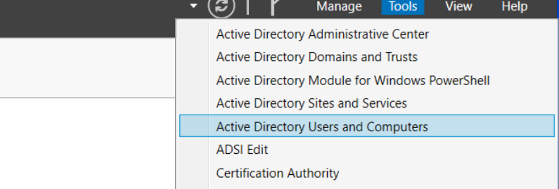
The new domain already contains the default containers and built-in groups. To add a user, right-click the Users container and choose New → User.
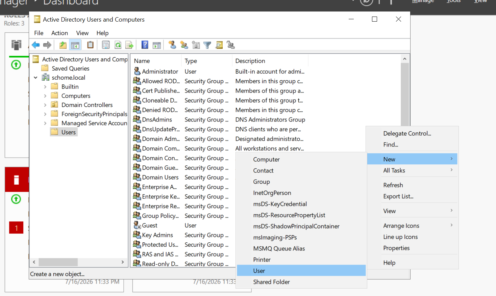
schome.local/Users.
Fill in the account details and logon name. In this lab the account is
satej.chaudhari, which becomes
satej.chaudhari@schome.local (or the pre-Windows 2000 form
SCHOME\satej.chaudhari). Set a password on the next page to
finish creating the account.
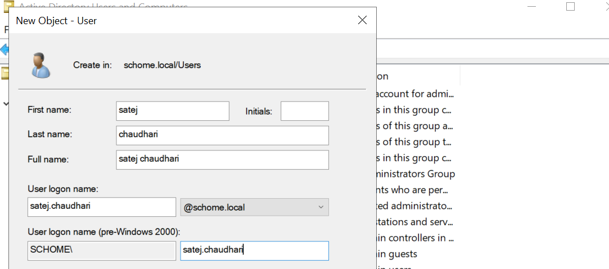
Joining a Client to the Domain
Next, join a workstation to the domain. The one important prerequisite is
DNS: the client's preferred DNS server must point at the domain
controller (192.168.29.39), because domain join and Kerberos rely on DNS
to locate the DC. On the client, run sysdm.cpl, open
Change, select Domain, and enter
schome.local. After supplying domain credentials, the
machine joins and a "Welcome to the schome.local domain" message is shown.
Reboot to complete the join.
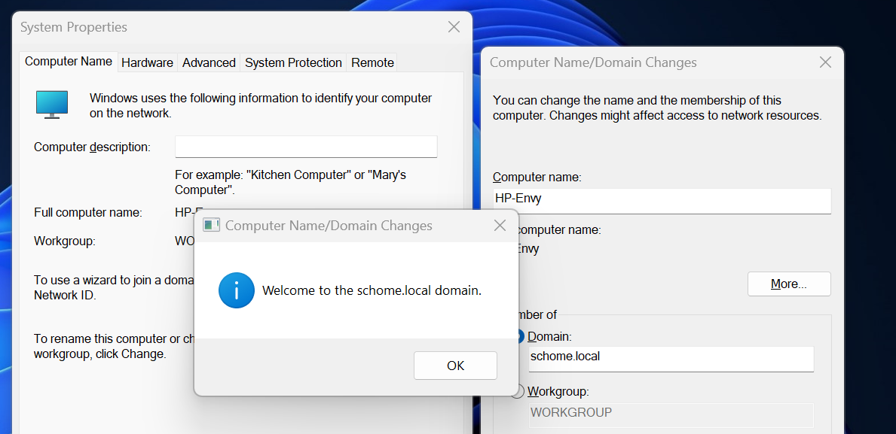
schome.local domain.Verifying the Domain
From the client, nltest confirms the domain controller is
reachable and advertising the expected services. A healthy response lists
the DC, its address, the domain and forest names, and flags such as
PDC GC DS LDAP KDC.
nltest /dsgetdc:schome.local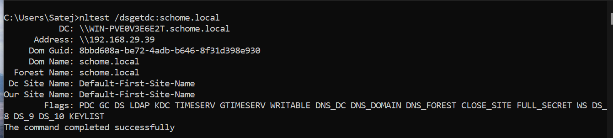
nltest /dsgetdc confirms the DC and that the command completed successfully.Creating an Organizational Unit
Group Policy is applied to Organizational Units (OUs), so to test a policy cleanly it helps to create a dedicated OU. Back on the DC, create a new OU — here named GPO-Test — leaving Protect container from accidental deletion ticked.
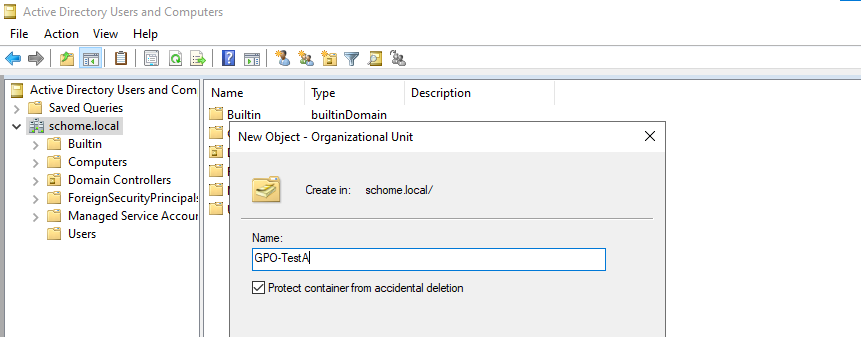
GPO-Test Organizational Unit.
Move the client's computer object (HP-ENVY) out of the
default Computers container and into the new OU so any policy linked to
GPO-Test will apply to it. ADUC warns that moving objects can
change how policy applies — which is exactly the intent here —
so confirm the move.
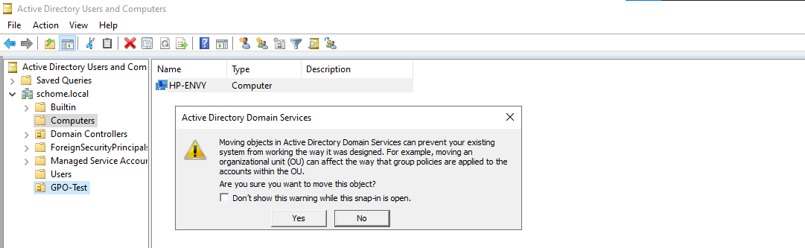
HP-ENVY computer account into the GPO-Test OU.Importing the Windows 11 Security Baseline
Rather than hand-configure hardening settings, we can import Microsoft's
published security baseline. Download the Windows 11 security baseline from
the Microsoft Security Compliance Toolkit and extract it; the
GPOs folder contains the baseline exported as GPO backups
(GUID-named folders plus a manifest.xml).
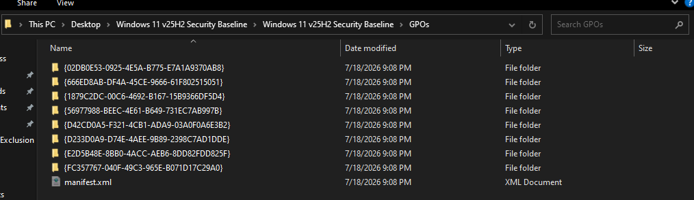
In the Group Policy Management Console (GPMC), create a new GPO under Group Policy Objects — here named Win11 25H2 Baseline Test.
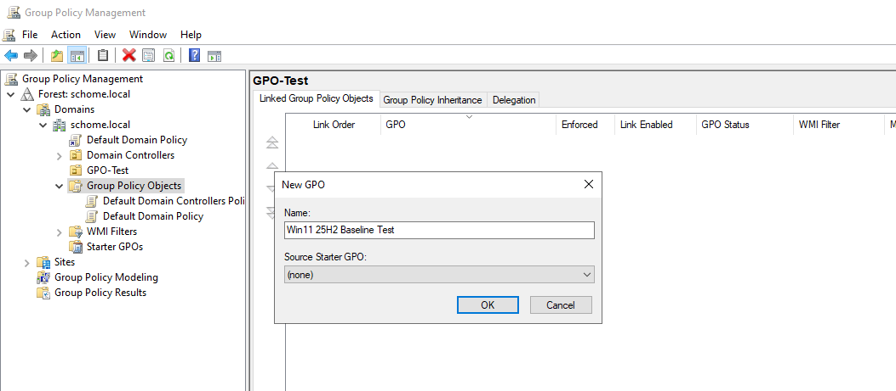
Right-click the new GPO and choose Import Settings. The wizard asks for a backup location and then lists the backed-up GPOs it found. Select the appropriate MSFT Windows 11 baseline entry (for example the domain/member computer policy) as the source.
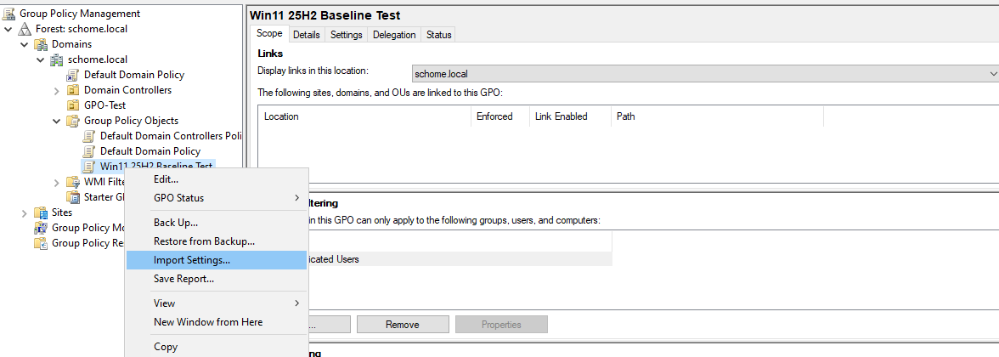
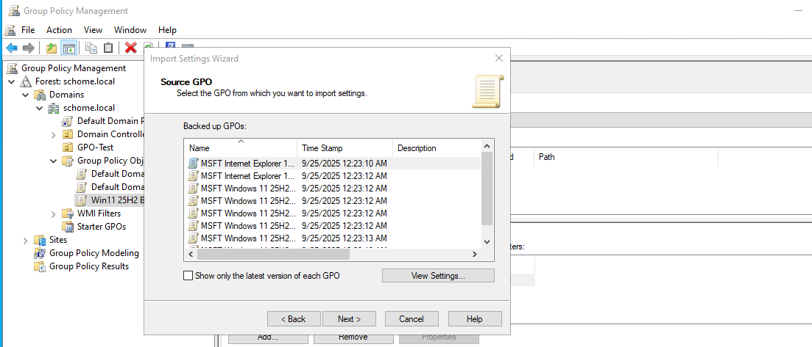
Linking and Applying the GPO
Creating the GPO does not apply it — it has to be linked to an OU. Right-click the GPO-Test OU and choose Link an Existing GPO, then select the baseline GPO.
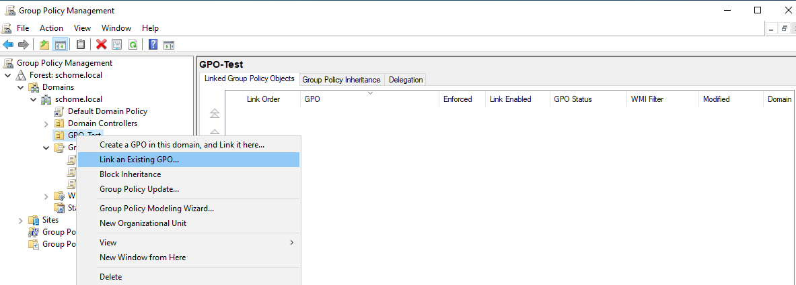
GPO-Test OU.The OU's Linked Group Policy Objects tab now shows the baseline with its link enabled, so it will apply to the computer we moved into the OU.
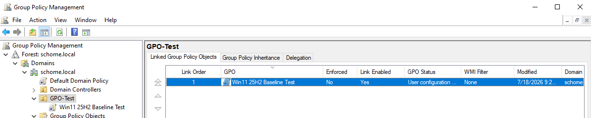
On the client, force a policy refresh and confirm the logged-on user to verify everything is working. Both the computer and user policy should update successfully.
gpupdate
whoami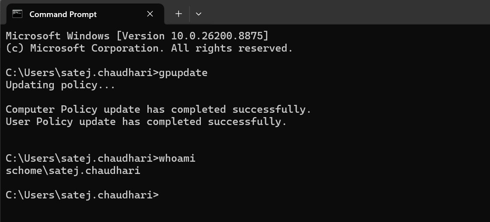
whoami confirms the domain account schome\satej.chaudhari.Reviewing and Extending the Baseline
It is worth opening the GPO in the Group Policy Management Editor to see what the baseline actually sets. Under Computer Configuration → Windows Settings → Security Settings you can review the enforced account policies, audit policy, and system-service states (for example, the startup mode of the Remote Registry service).
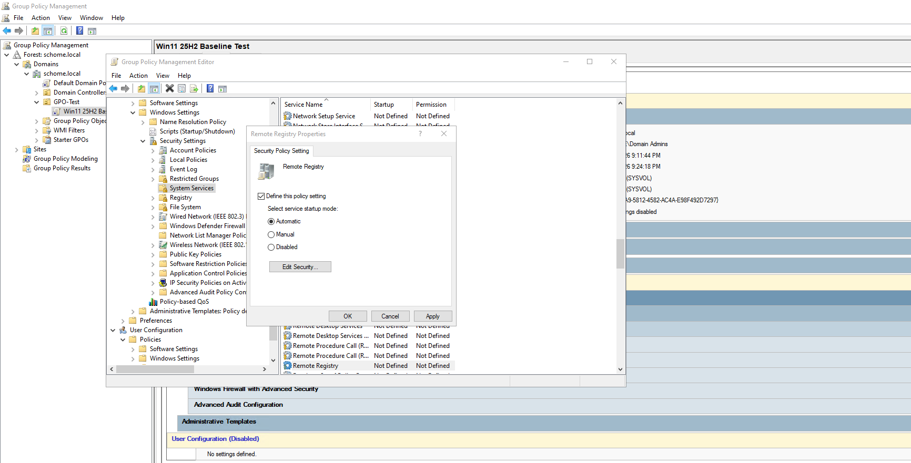
The same editor is where you extend the policy for the environment. For instance, under Windows Defender Firewall with Advanced Security → Inbound Rules, the New Inbound Rule Wizard can add a predefined rule — such as allowing Windows Management Instrumentation (WMI) — to support remote management.
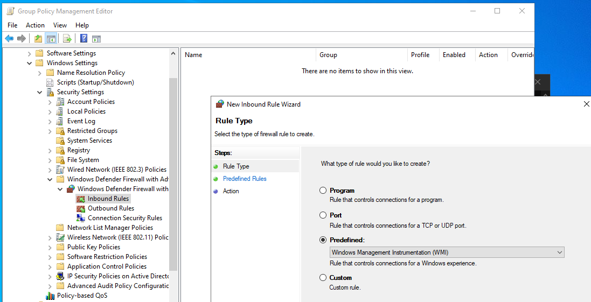
Conclusion
That completes a working Active Directory environment: a new forest and domain controller, a domain user, a domain-joined client, and a security baseline delivered through Group Policy. From here the same lab is a foundation for practising enumeration and the attack paths covered in the other Active Directory material on this site.
A couple of points are worth remembering. DNS is the quiet prerequisite
for almost everything — domain join, Kerberos, and GPO application
all depend on clients resolving the DC — so point client DNS at the
domain controller first. And Group Policy only takes effect once a GPO is
both linked to an OU and applied to objects within it, which the
gpupdate step confirms.